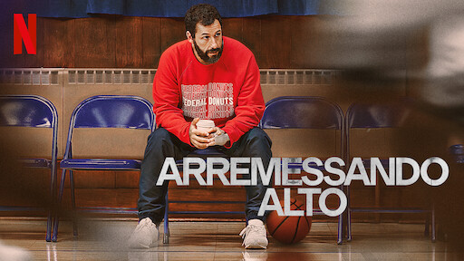
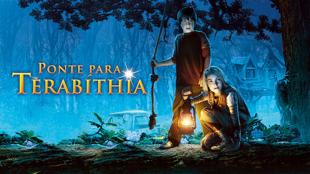

Um olheiro de basquete azarado encontra um jogador com um grande potencial e se esforça para mostrar ao mundo que os dois merecem chegar à NBA.
Data de lançamento: 3 de junho de 2022 (EUA)
Diretor: Jeremiah Zagar
Produção: Adam Sandler, LeBron James, Maverick Carter, Jeff Kirschenbaum, Joseph Vecsey, Zack Roth, Allen Covert, Joe Roth
Produtoras: Happy Madison Productions, SpringHill Company, MAIS
Música composta por: Dan Deacon

Jess sente-se um estranho na escola e até mesmo em sua família. Durante todo o verão ele treinou para ser o garoto mais rápido da escola, mas seus planos são ameaçados por Leslie, que vence uma corrida que deveria ser apenas para garotos.
Data de lançamento: 16 de março de 2007 (Brasil)
Diretor: Gábor Csupó
Autora: Katherine Paterson
Adaptação de: Bridge to Terabithia
Baseado em: Bridge to Terabithia, de Katherine Paterson
Companhia(s) produtora(s): Walden Media
Acompanhe a história de Desmond T. Doss, um médico do exército americano que, durante a Segunda Guerra Mundial, se recusa a pegar em armas. Durante a Batalha de Okinawa ele trabalha na ala médica e salva cerca de 75 homens.
Data de lançamento: 26 de janeiro de 2017 (Brasil)
Diretor: Mel Gibson
Indicações: AACTA Award de Melhor Diretor, MAIS
Prêmios: AACTA Award de Melhor Diretor, MAIS
Baseado em: The Conscientious Objector, de Terry Benedict
Edição: John Gilbert